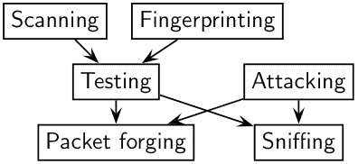
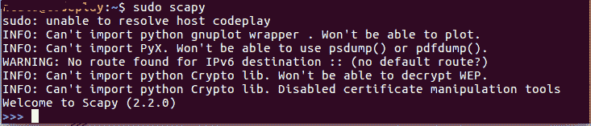
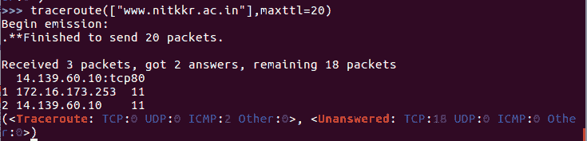

scapy 简介
原文：https://www.studytonight.com/network-programming-in-python/introduction-to-scapy
在上一个教程之后，你一定已经对使用dpkt模块可以做什么有了足够的了解。在本课中，我们将了解另一个 python 模块，它允许我们发送、嗅探、剖析和伪造网络数据包。这种能力允许构建能够探测、扫描或攻击网络的工具。

我们为什么要用scapy？
你可能会想，既然已经有了dpkt模块，为什么还要用scapy。他们不是在做同样的事情吗！不完全是，事实是scapy为我们提供了比任何其他工具或模块更多的功能。
scapy除了基本的嗅探网络数据包的用法外，还执行其他大部分其他工具都做不到的任务，比如发送无效帧、注入自己的 802.11 帧、组合技术(VLAN 跳频+ ARP 缓存中毒、WEP 加密通道上的 VOIP 解码等。)等。
802.11 帧基本上是无线帧包，不能使用dpkt库操控。
所以来吧，让我们不再浪费时间，安装scapy:
sudo pip install scapy
或者下载软件包并安装，请点击此处链接。
点火(运行)scapy
如果您正在运行终端会话(Mac OSx 用户)，或者您是 linux 用户，则:
$ sudo scapy欢迎来到 Scapy (2.0.1-dev)> > >
如果您是 Windows 用户，则:
C:\>scapy信息:内核不支持 IPv6 警告:找不到 IPv6 目的地的路由::(没有默认路由？)欢迎来到 Scapy (2.0.1-dev)> > >

如果您没有安装所有可选软件包，scapy 将通知您某些功能将不可用:
信息:无法导入 python gnuplot 包装。无法策划。信息:无法导入 PyX。无法使用 psdump()或 pdfdump()。
读取pcap文件
您可以从一个pcap文件中读取数据包，并将其写入另一个pcap文件。
>>> a = rdpcap("/home/ntal8/Desktop/bkp_pcap/rawcap.pcap")
>>> a
scapy特征一瞥
TCP Traceroute: Unlike other traceroute programs, who wait for each node to reply before going to the next,
scapysends all the packets at the same time.
最后一行实际上是函数的结果:traceroute 结果对象和未应答数据包的数据包列表。
TCP Port Scanning: Send a
TCP SYNon each port. Wait for aSYN-ACKor anRSTor anICMPerror.>>> res,unans = sr( IP(dst = "target") ... /TCP(flags="S", dport=(1,1024)) )可能的结果可视化:开放端口
>>> res.nsummary( lfilter=lambda (s,r): (r.haslayer(TCP) and (r.getlayer(TCP).flags & 2)) )
要了解更多关于scapy的功能和特点，请访问 scapy 的官方文档。